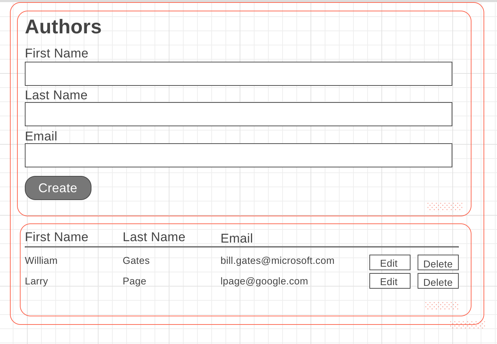

CIS 658 |
Bug Tracking in React |
Winter 2020 |
This assignment was originally designed my Prof. Engelsma
For this sequence of assignments, you will build a version of your bug tracking app using React.
Part 1: The back end
Create a Rails API-only back end for storing Users and Bugs. The proceedure will be similar to the one I used to create the Blog post API here
Part 2: Create a view for Users
Create a view where you can see a list of users, as well as edit them. If you like, for now, you can just use "dummy" data inside React itself.
Feel free to style the page however you like. Here is one suggestion:
Part 3: Connect to an API
Connect your Users view to your Rails API.Part 4: Add a Bugs view
Optional: Add a Bug view.Updated Thursday, 26 March 2020, 8:52 PM